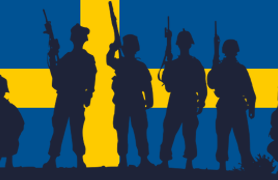
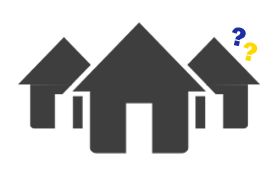

INSTRUKS
Naturens vrede og klimaforvirring har skabt den perfekte frosne bro mellem Danmark og Sverige. Find hjælp og info her.
Se mere
Danmarks officielle beredskab ved tilfrosne grænseovergange.
Vi regulerer, rådgiver og uddeler kæplicenser med hård, men
retfærdig hånd.
Naturens vrede og klimaforvirring har skabt den perfekte frosne bro mellem Danmark og Sverige. Find hjælp og info her.
Se mereEksperter er stadig uenige om, hvorvidt det bare var skiturister.
Mistænkelig ro, Volvo, eller for mange surdejsprojekter?
Nej, du glemte ikke "din hat".